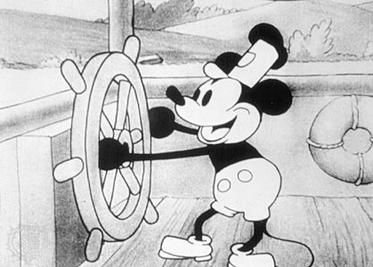
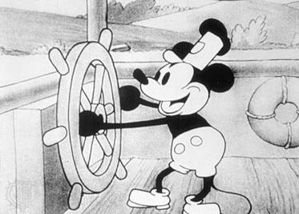

Mickey Mouse

 

Mickey Mouse is a cartoon character and the mascot of The Walt Disney Company.
Mickey Mouse is a cartoon character and the mascot of The Walt Disney Company created in 1928 at Walt Disney Animation Studios. An anthropomorphic mouse who typically wears red shorts, large yellow shoes, and white gloves, Mickey is one of the world's most recognizable characters.
Created as a replacement for a prior Disney character, Oswald the Lucky Rabbit, Mickey first appeared in the short Plane Crazy, debuting publicly in the short film Steamboat Willie (1928), one of the first sound cartoons. He went on to appear in over 130 films, including The Band Concert (1935), Brave Little Tailor (1938), and Fantasia (1940). Mickey appeared primarily in short films, but also occasionally in feature-length films. Ten of Mickey's cartoons were nominated for the Academy Award for Best Animated Short Film, one of which, Lend a Paw, won the award in 1942. In 1978, Mickey became the first cartoon character to have a star on the Hollywood Walk of Fame and was included alongside Donald Duck in TV Guide's list of the 50 greatest cartoon characters of all time in 2002.